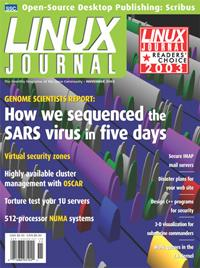

Shutdown Archive web server
Search:
Linux Journal
Issue #115/November 2003

Features
HA-OSCAR: the Birth of Highly Available OSCAR
by Ibrahim Haddad, Chokchai Leangsuksun and Stephen L. Scott
If a single point of failure can make hundreds of cluster nodes useless, you have a problem. We have the solution.
Cluster Hardware Torture Tests
by John Goebel
Those metal pizza boxes may look harmless, but the wrong ones will make your users angry and your electrician rich.
Sequencing the SARS Virus
by Martin Krzywinski and Yaron Butterfield
Linux on PC hardware formed the basis for an infrastructure to handle huge volumes of genetic data.
TALOSS (Three-Dimensional Advanced Localization Observation Submarine Software)
by Douglas B. Maxwell and Richard Shell
An experimental US Navy program combines multiple sources of information into one 3-D display.
My Other Computer Is a Supercomputer
by Steve Jones
You need to start running protein folding jobs—when?
Indepth
2003 Readers' Choice Awards
by Heather Mead
You voted. We counted. You're waiting.
Introducing Scribus
by Peter Linnell
Take desktop publishing off the shrinking list of applications Linux doesn't have, and create press-ready documents with a new GPL program.
Embedded
Writing Secure Programs
by Cal Erickson
If you don't have time to do it right, where will you get the time to issue a security warning and a patch—or worse, a device recall?
Toolbox
Kernel Korner
The New Work Queue Interface in the 2.6 Kernel
by Robert Love
At the Forge
Server Migration and Disasters
by Reuven M. Lerner
Cooking with Linux
Diners, Start Your Processors
by Marcel Gagné
Paranoid Penguin
Secure Mail with LDAP and IMAP, Part I
by Mick Bauer
Columns
EOF
Extreme Linux: Not All that Far Out There
by Jason Pettit
Reviews
OpenOffice.org 1.0 Resource Kit
by Kenneth Wehr
Departments
Letters
upFRONT
From the Editor
On the Web
Best of Technical Support
New Products
Archive Index
Shutdown Archive web server
Search:
Copyright © 1994 - 2018
Linux Journal
. All rights reserved.